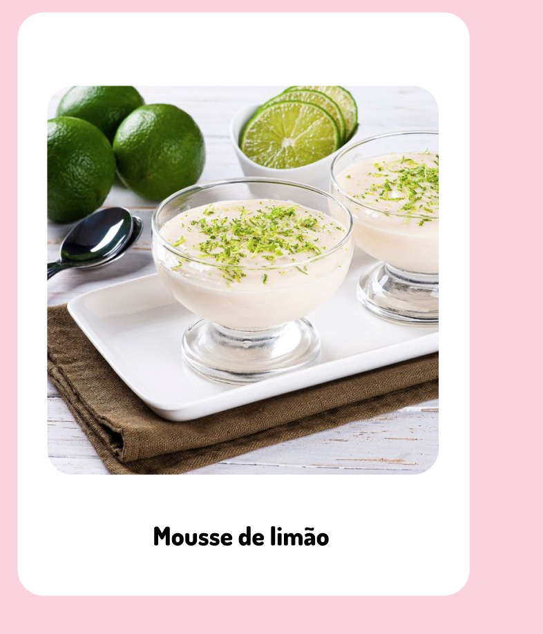

| 
|
|
Ingredientes:
- 1 lata de creme gelado sem soro;
- 1 lata de leite condensado;
- 1/2 de xícara (chá) de suco de limão
|
|
|
Modo de preparo:
- 1 Coloque o leite condensado e o creme de leite no Liquidificador e bata até que fique tudo bem homogêneo.
- 2 Vá colocando o suco de limão aos poucos até ficar cremoso e consistente.
- 3 Coloque em uma travessa, decore e leve a geladeira por quatro horas.Bom Apetite!!!!
|
|